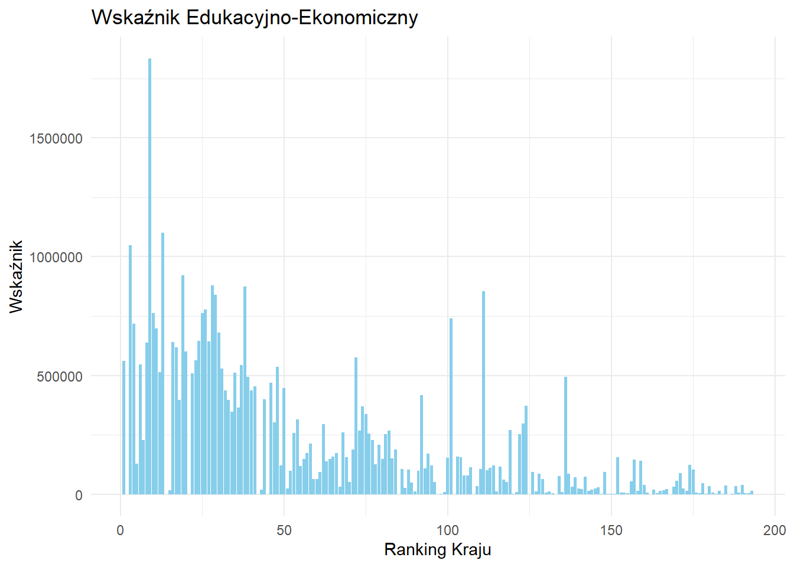
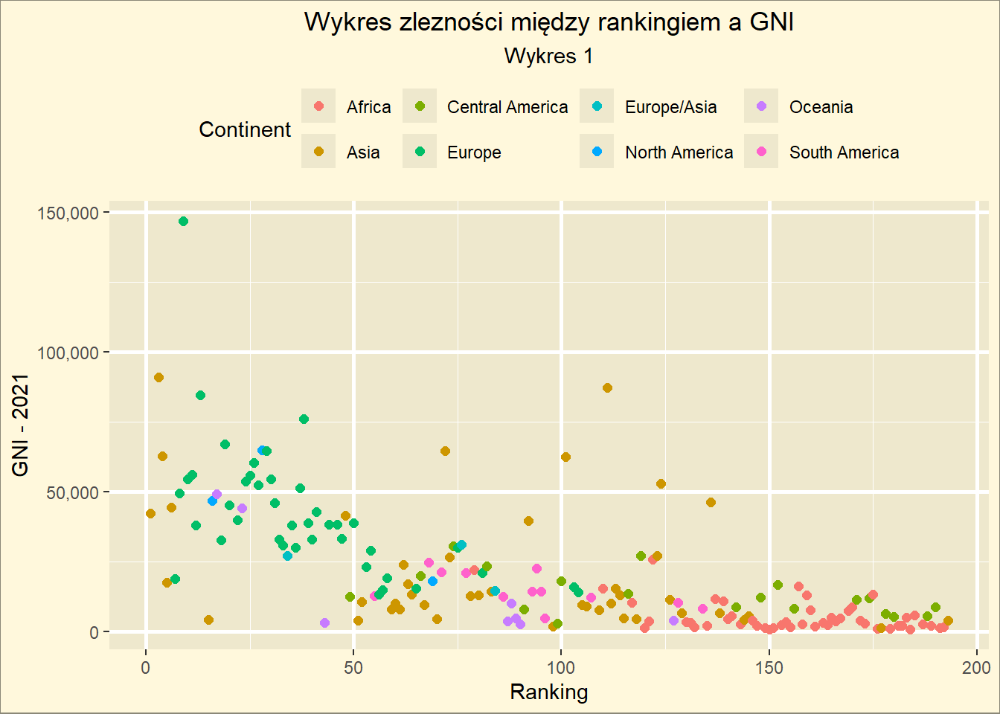
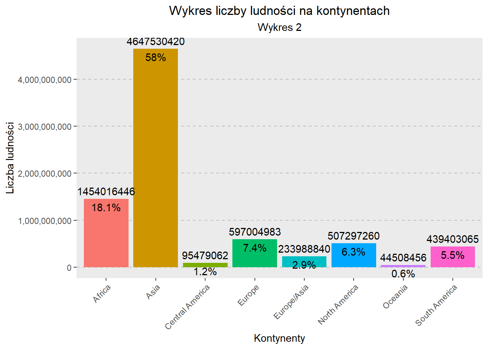

Używane Pakiety
library(tidyverse)
library(dplyr)
library(DT)
library(tibble)
library(ggplot2)
library(readr)
library(plotly)
library(leaflet)
library(scales)Grupa 1
Witam, nazywam się Radosław Górecki, jestem studentem pierwszego roku z pasją do programowania. Ostatnio zainteresowałem się analizą danych dotyczących średniego ilorazu inteligencji (IQ) mieszkańców różnych krajów. Wykorzystałem dane z Kaggle oraz języka R, aby przeprowadzić analizę i stworzyć interaktywne wizualizacje. Zapraszam do odkrywania wniosków dotyczących czynników wpływających na średni IQ i innych ciekawostek, które udało mi się odkryć w trakcie pracy.
Od jakiegoś czasu interesuję się programowaniem. Próbowałem sobie programować w różnych językach takich jak: C++, JavaScript, Python, HTML. Jednak najbardziej spodobało mi się prograowanie w Pythonie, dlatego, że można tam pisać bardzo prosty i czytelny kod. Niedawno zainteresowałem się machine learningiem gdzie wydaje mi się użytecznymi językami mogą być python oraz R. Jeszcze nie do końca wybrałem co chcę w życiu robić, narazie testuje sobie różne ścieżki kariery programisty. Tak jak już wyżej pisałem próbowałem sobie pisać w różnych językach, napisałem różne rzeczy takie jak: strony internetowe, grę komputerową, grę internetową, proste aplikacje w konsoli. Teraz na celowniku uczenie maszynowe :)
Używane Pakiety
library(tidyverse)
library(dplyr)
library(DT)
library(tibble)
library(ggplot2)
library(readr)
library(plotly)
library(leaflet)
library(scales)Dane zostały pobrane z popularnej strony: www.kaggle.com. Do zaimportowania danych zastosowałem polecenie read_csv():
dane <- read_csv(file="dane/avgIQpercountry.csv")Polecenia mogłem używać po wczytaniu biblioteki tidyverse, w której mieszczą się pakiety języka R przeznaczone do nauki o danych.
Zestaw danych nosi nazwę: Average global IQ per country with other stats.
Zawiera on średnie wyniki IQ (ilorazów inteligencji) mieszkańców danego kraju z uwzględnieniem mających na to wpływ niektórych czynników.
Możesz pobrać plik z danymi tutaj: Kliknij.
Meta Dane:
| Zmienna | Opis |
|---|---|
| Rank | Ranking danego kraju bazujący na średnim IQ |
| Country | Nazwa kraju |
| Average IQ | Średni wynik IQ |
| Continent | Kontynent na którym leży dany kraj |
| Literacy Rate | Analfabetyzm (wzór: Literaci/Całkowita populacja) |
| Nobel Prices | Ilość zdobytych nagród Nobla |
| HDI 2021 | Wskaźnik Rozwoju Społecznego w 2021 roku |
| Mean years of schoolling - 2021 | Średnia liczba lat, w których każdy uczeń uczęszcza do szkoły w 2021 roku |
| GNI - 2021 | Indeks Krajowy Brutto w 2021 roku |
| Population - 2023 | Populacja w danych kraju w 2023 roku |
Korzystając z możliwości wrappingu wykonalem podsumowanie danych w formie interaktywnej tabeli dla Europy, Azji oraz Afryki. W tym celu m.in stworzyłem nową kolumnę w której zawiera się podział na grupy bazując na średnim ilorazie inteligencji.
Skrypt:
Europe <- dane |>
filter(Continent == "Europe") |>
select(Country, `Average IQ`, `Nobel Prices`, `HDI (2021)`) |>
mutate(
`IQ Classification` = cut(`Average IQ`, breaks = c(0, 80, 90, 100, +Inf), labels = c("Very Low Average", "Low Average", "Average", "High Average"))
) |>
group_by(`IQ Classification`) |>
summarise(
Mean_IQ = round(mean(`Average IQ`, na.rm = TRUE), 2),
Total_Nobel_Prizes = sum(`Nobel Prices`, na.rm = TRUE),
Mean_HDI = round(mean(`HDI (2021)`, na.rm = TRUE), 2)
)Tabela:
Wnioski:
Powyższa tabela zawiera klasyfikacje IQ krajów Europy podzieloną na grupy, a także wybrane niektóre czynniki. Można z niej wywnioskowować, że liczba zdobytych nagród Nobla ma mały wpływ na wyniki IQ, natomiast średni wskaźnik rozwoju społecznego ma już dużo większy wpływ.
Skrypt:
Asia <- dane |>
filter(Continent == "Asia") |>
select(Country, `Average IQ`, `Nobel Prices`, `HDI (2021)`) |>
mutate(
`IQ Classification` = cut(`Average IQ`, breaks = c(0, 80, 90, 100, +Inf), labels = c("Very Low Average", "Low Average", "Average", "High Average"))
) |>
group_by(`IQ Classification`) |>
summarise(
Mean_IQ = round(mean(`Average IQ`, na.rm = TRUE), 2),
Total_Nobel_Prizes = sum(`Nobel Prices`, na.rm = TRUE),
Mean_HDI = round(mean(`HDI (2021)`, na.rm = TRUE), 2)
)Tabela:
Wnioski:
Powyższa tabela zawiera klasyfikacje IQ krajów Azji podzieloną na grupy, a także wybrane niektóre czynniki. Tutaj można postawić inne wnioski niż w poprzedniej tabeli. Widać wyraźnie, że klasyfikacja IQ “Low Average” posiada większy średni wskaźnik rozwoju społecznego niż klasyfikacja “Average”, a więc ten czynnik nie jest decydujący we wpływaniu na ostateczny średni wynik IQ. Natomiast liczba nagród nobla nadal wydaje się nie mieć za dużego wpływu tak samo jak w poprzednim przykładzie.
Skrypt:
Africa <- dane |>
filter(Continent == "Africa") |>
select(Country, `Average IQ`, `Nobel Prices`, `HDI (2021)`) |>
mutate(
`IQ Classification` = cut(`Average IQ`, breaks = c(0, 80, 90, 100, +Inf), labels = c("Very Low Average", "Low Average", "Average", "High Average"))
) |>
group_by(`IQ Classification`) |>
summarise(
Mean_IQ = round(mean(`Average IQ`, na.rm = TRUE), 2),
Total_Nobel_Prizes = sum(`Nobel Prices`, na.rm = TRUE),
Mean_HDI = round(mean(`HDI (2021)`, na.rm = TRUE), 2)
)Tabela:
Wnioski:
Powyższa tabela zawiera klasyfikacje IQ krajów Afryki podzieloną na grupy, a także wybrane niektóre czynniki. Można z niej wywnioskowować, że liczba zdobytych nagród Nobla ma mały wpływ na wyniki IQ, natomiast średni wskaźnik rozwoju społecznego ma duże znaczenie. Wnioski bardzo podobne jak w przykładzie Europy.
Napisana funkcja oblicza Wskaźnik Edukacyjno-Ekonomiczny.
Kod:
funkcja <- function(data, col_schooling, col_GNI, col_literacy){
edu_econ_index <- data[[col_schooling]] * data[[col_GNI]] * data[[col_literacy]]
data <- mutate(data, edu_econ_index)
plot <- ggplot(data, aes(x=Rank, y=edu_econ_index)) +
geom_bar(stat = "identity", fill = "skyblue") +
labs(title = "Wskaźnik Edukacyjno-Ekonomiczny", x = "Ranking Kraju", y = "Wskaźnik") +
theme_minimal()
return(plot)
}daneT <- dane |> as_tibble()
funkcja(daneT, "Mean years of schooling - 2021", "GNI - 2021", "Literacy Rate")Rezultat:

Jak już wyżej napisałem funkcja oblicza Wskaźnik Edukacyjno-Ekonomiczny, wykorzystując wzór: \[W = x * y * z\]
Gdzie:
W - Wskaźnik edukacyjno-ekonomiczny
x - średnia długość nauki
y - PKB na mieszkańca
z - wskaźnik piśmienności
Poniższy kod tworzy 3 przykładowe pliki csv, następnie wczytuje stworzone pliki i łączy je ze sobą w całość jako tibble. W skrypcie została użyta funkcja map_dfr(), zwraca ona ramkę danych stworzoną przez połączenie wierszy.
Skrypt:
# Tworzenie przykładowych 3 plików
write_csv(data.frame(id = c(1, 2, 3), name = c("Marek", "Mateusz", "Janek"), iq = sample(30:200, 3)), "plik1.csv")
write_csv(data.frame(id = 4, name = "Zbyszek", iq = sample(30:200, 1)), "plik2.csv")
write_csv(data.frame(id = c(5, 6), name = c("Piotr", "Mariusz"), iq = sample(30:200, 2)), "plik3.csv")
# funckja wczytująca pliki
wczytaj_plik <- function(sciezka) {
read_csv(sciezka) |>
as_tibble()
}
# lista plików do wcyztania
pliki <- c("plik1.csv", "plik2.csv", "plik3.csv")
# wczytanie plików do zmiennej wynik
wynik <- map_dfr(pliki[1:3], wczytaj_plik)Wyświetlenie wyniku:
wynik# A tibble: 6 × 3
id name iq
<dbl> <chr> <dbl>
1 1 Marek 108
2 2 Mateusz 86
3 3 Janek 191
4 4 Zbyszek 96
5 5 Piotr 52
6 6 Mariusz 155Jak widać został zwrócony obiekt tibble składający się z 3 stworzonych przez nas plików.
W tym podrozdziale zaprezentuję 2 wykresy stworzone przy pomocy biblioteki ggplot2 oraz ich interpretację.
Kod:
styl <- theme(
legend.position = "top",
legend.background = element_rect(fill = "cornsilk1"),
plot.title = element_text(hjust = 0.5),
plot.subtitle = element_text(hjust = 0.5),
plot.background = element_rect(fill = "cornsilk1", color = "cornsilk4"),
panel.background = element_rect(fill = "cornsilk2"),
panel.grid.major = element_line(size = 1)
)
w1 <- dane |> ggplot(aes(Rank, `GNI - 2021`, color = Continent)) +
geom_point(position = position_dodge(width = 0.5), size = 2) +
labs(
title = "Wykres zlezności między rankingiem a GNI",
subtitle = "Wykres 1",
x = "Ranking",
y = "GNI - 2021"
) +
styl +
scale_y_continuous(labels = scales::comma)Wykres

Interpretacja:
Kod:
styl <- theme(
legend.position = "none",
plot.title = element_text(hjust = 0.5),
plot.subtitle = element_text(hjust = 0.5),
axis.text.x = element_text(angle = 45, hjust = 1),
panel.grid.major.y = element_line(
color = "gray",
linetype = "dashed",
size = 0.5
),
panel.grid.minor.y = element_blank(),
panel.grid.major.x = element_blank(),
panel.grid.minor.x = element_blank()
)
d <-
dane |> mutate(`Population - 2023` = as.integer(`Population - 2023`)) |> group_by(Continent) |> summarise(liczba = sum(`Population - 2023`))
w2 <-
d |> ggplot(aes(x = Continent, y = liczba, fill = Continent)) +
geom_col() +
geom_text(aes(label = liczba), vjust = -0.5) +
geom_text(aes(label = paste0(round(liczba / sum(d$liczba) * 100, 1), "%")), vjust = 1.5) +
labs(
title = "Wykres liczby ludności na kontynentach",
subtitle = "Wykres 2",
x = "Kontynenty",
y = "Liczba ludności"
) +
styl +
scale_y_log10() +
scale_y_continuous(labels = scales::comma)Wykres:

Interpretacja:
Poniżej znajdują się udoskonalone wykresy które mogliśmy zobaczyć w poprzednim akapcie. Wykresy te posiadają jeszcze większą funkcjonalność oraz są ineraktywne. Do stworzenia tych wykresów zastosowałem bibliotekę plotly, która jest potężnym narzędziem umożliwiającym interaktywną wizualizację danych. Utworzenie takiego wykresu jest wbrew pozorom bardzo proste.
Aby stworzyć wykres 1 wystarczy użyć polecenia plot_ly(), a następnie w środku podać co ma się znajdować na osi X, a co na osi Y. Jeśli chcemy aby każdy punkt był pokolorowany zgodnie z jakąś legendą wystarczy po przecinku dopisać color = ..., a w miejscu kropek wybieramy zgodnie z czym punkty mają być pokolorowane. Aby dodać tytuł, nazwy osi, itp., np. po operatorze |> wpisujemy layout(...), a w środku odpowiednie zmienne i wartości.
Kod:
fig <- dane |> plot_ly(x = ~Rank, y = ~`GNI - 2021`, color = ~Continent) |> layout(
title = 'Wykres zlezności między rankingiem a GNI',
xaxis = list(title = 'Ranking'),
yaxis = list(title = 'GNI- 2021')
)Wykres
Aby stworzyć wykres 2 oprócz wykonania takich samych czynności jak w tworzeniu wykresu 1, trzeba w nawiasach polecenia plot_ly() dodać typ = "bar", aby stworzyć wykres kolumnowy. Następnie po operatorze |> należy wpisać add_text(), dzięki temu będziemy miei możliwość dodać tekst na wykresie, w nawiasach tego polecenia mamy wiele możliwych opcji stylistycnzych m.in position, text lub textposition.
Kod:
fig2 <- d |> plot_ly(x = ~Continent, y = ~liczba, color = ~Continent, type = "bar") |>
add_text(
text = ~paste0(round(liczba / sum(d$liczba) * 100, 1), "%"),
position = "inside",
textposition = "auto",
hoverinfo = "text",
textfont = list(color = "black")
) |>
layout(
title = "Wykres liczby ludności na kontynentach",
xaxis = list(title = "Kontynenty"),
yaxis = list(title = "Liczba ludności",
tickformat = ",d"),
showlegend = FALSE
)Wykres:
Aby stworzyć interaktywną mapę użyłem biblioteki leaflet. Służy ona do tworzenia interaktywnych map, jest łatwa w użyciu. Poniżej znajduję się mapa na której można sprawdzić populację wybranych przezemnie kilku krajów. W tym celu skróciłem dane do 6 krajów za pomocą polecenia head(dane) oraz dodałem wyszukane z internetu współrzędne geograficzne (szerokość i długość) do każdego kraju dodając poprostu dwie kolumny do skróconych danych. Następnie tak przekształcone dane zostały użyte w naszej mapce.
Kod:
dane_mapa <-
head(dane) |> mutate(
szer = c(35.6895, 25.0320, 1.3521, 22.3193, 39.9042, 37.5665),
dl = c(139.6917, 121.5654, 103.8198, 114.1694, 116.4074, 126.9780)
) |> select(Country, `Population - 2023`, szer, dl)
mapa <- leaflet(dane_mapa) |>
addTiles() |>
addCircleMarkers(
~ dl,
~ szer,
radius = 20,
fillOpacity = 0.5,
popup = ~ paste(Country, "| Population:", `Population - 2023`)
)Mapa: